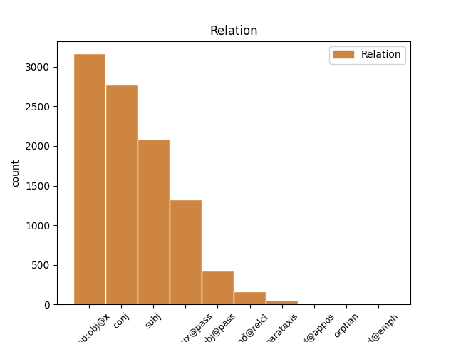
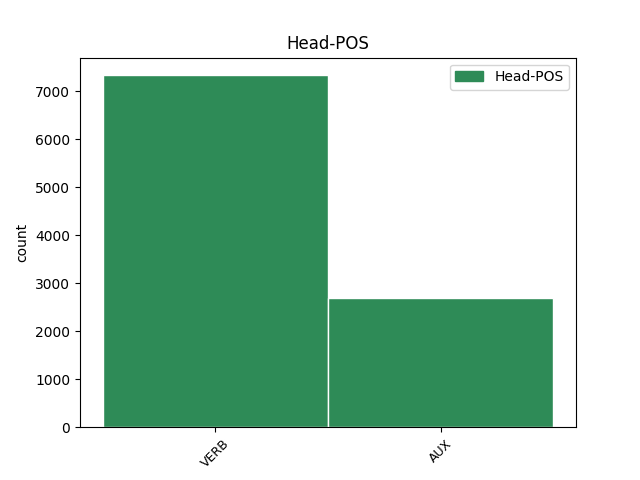
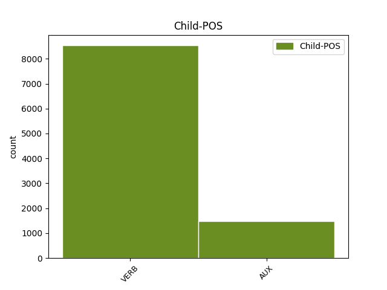

Distribution of features within this leaf



Agreement Rules sorted by frequency.
- When the dependent token is the direct object complements(comp:obj@x) of the head token,
1 cum _ _ _ _ 0 _ _ _
2 enim _ _ _ _ 0 _ _ _
3 forma _ _ _ _ 0 _ _ _
4 sit _ _ _ _ 0 _ _ _
5 actus _ _ _ _ 0 _ _ _
6 , _ _ _ _ 0 _ _ _
7 materia _ _ _ _ 0 _ _ _
8 vero _ _ _ _ 0 _ _ _
9 sit _ _ _ _ 0 _ _ _
10 ens _ _ _ _ 0 _ _ _
11 in _ _ _ _ 0 _ _ _
12 potentia _ _ _ _ 0 _ _ _
13 tantum _ _ _ _ 0 _ _ _
14 ; _ _ _ _ 0 _ _ _
15 nullo _ _ _ _ 0 _ _ _
16 modo _ _ _ _ 0 _ _ _
17 id _ _ _ _ 0 _ _ _
18 quod _ _ _ _ 0 _ _ _
19 est _ _ _ _ 0 _ _ _
20 ex _ _ _ _ 0 _ _ _
21 materia _ _ _ _ 0 _ _ _
22 et _ _ _ _ 0 _ _ _
23 forma _ _ _ _ 0 _ _ _
24 compositum _ _ _ _ 0 _ _ _
25 , _ _ _ _ 0 _ _ _
26 potest possum VERB N3|modA|tem1|gen6 Mood=Ind|Number=Sing|Person=3|Tense=Pres|VerbForm=Fin|VerbType=Mod|Voice=Act 0 _ _ _
27 esse sum AUX N3|modH|tem1 Tense=Pres|VerbForm=Inf|Voice=Act 26 comp:obj@x _ _
28 alterius _ _ _ _ 0 _ _ _
29 forma _ _ _ _ 0 _ _ _
30 secundum _ _ _ _ 0 _ _ _
31 se _ _ _ _ 0 _ _ _
32 totum _ _ _ _ 0 _ _ _
33 . _ _ _ _ 0 _ _ _
1 si _ _ _ _ 0 _ _ _
2 autem _ _ _ _ 0 _ _ _
3 secundum _ _ _ _ 0 _ _ _
4 aliquid _ _ _ _ 0 _ _ _
5 sui _ _ _ _ 0 _ _ _
6 sit _ _ _ _ 0 _ _ _
7 forma _ _ _ _ 0 _ _ _
8 , _ _ _ _ 0 _ _ _
9 id _ _ _ _ 0 _ _ _
10 quod _ _ _ _ 0 _ _ _
11 est _ _ _ _ 0 _ _ _
12 forma _ _ _ _ 0 _ _ _
13 dicimus dico VERB N3|modA|tem1|gen7 Mood=Ind|Number=Plur|Person=1|Tense=Pres|VerbForm=Fin|Voice=Act 0 _ _ _
14 animam _ _ _ _ 0 _ _ _
15 , _ _ _ _ 0 _ _ _
16 et _ _ _ _ 0 _ _ _
17 id _ _ _ _ 0 _ _ _
18 cuius _ _ _ _ 0 _ _ _
19 est _ _ _ _ 0 _ _ _
20 forma _ _ _ _ 0 _ _ _
21 dicimus dico VERB N3|modA|tem1|gen7 Mood=Ind|Number=Plur|Person=1|Tense=Pres|VerbForm=Fin|Voice=Act 13 conj _ _
22 primum _ _ _ _ 0 _ _ _
23 animatum _ _ _ _ 0 _ _ _
24 , _ _ _ _ 0 _ _ _
25 ut _ _ _ _ 0 _ _ _
26 supra _ _ _ _ 0 _ _ _
27 dictum _ _ _ _ 0 _ _ _
28 est _ _ _ _ 0 _ _ _
29 . _ _ _ _ 0 _ _ _
1 illud _ _ _ _ 0 _ _ _
2 enim _ _ _ _ 0 _ _ _
3 quo _ _ _ _ 0 _ _ _
4 primo _ _ _ _ 0 _ _ _
5 aliquid _ _ _ _ 0 _ _ _
6 operatur _ _ _ _ 0 _ _ _
7 , _ _ _ _ 0 _ _ _
8 est _ _ _ _ 0 _ _ _
9 forma _ _ _ _ 0 _ _ _
10 eius _ _ _ _ 0 _ _ _
11 cui _ _ _ _ 0 _ _ _
12 operatio _ _ _ _ 0 _ _ _
13 attribuitur _ _ _ _ 0 _ _ _
14 , _ _ _ _ 0 _ _ _
15 sicut _ _ _ _ 0 _ _ _
16 quo _ _ _ _ 0 _ _ _
17 primo _ _ _ _ 0 _ _ _
18 sanatur _ _ _ _ 0 _ _ _
19 corpus _ _ _ _ 0 _ _ _
20 , _ _ _ _ 0 _ _ _
21 est _ _ _ _ 0 _ _ _
22 sanitas _ _ _ _ 0 _ _ _
23 , _ _ _ _ 0 _ _ _
24 et _ _ _ _ 0 _ _ _
25 quo _ _ _ _ 0 _ _ _
26 primo _ _ _ _ 0 _ _ _
27 scit scio VERB M3|modA|tem1|gen6 Mood=Ind|Number=Sing|Person=3|Tense=Pres|VerbForm=Fin|Voice=Act 30 subj _ _
28 anima _ _ _ _ 0 _ _ _
29 , _ _ _ _ 0 _ _ _
30 est sum AUX N3|modA|tem1|gen6 Mood=Ind|Number=Sing|Person=3|Tense=Pres|VerbForm=Fin|Voice=Act 0 _ _ _
31 scientia _ _ _ _ 0 _ _ _
32 ; _ _ _ _ 0 _ _ _
1 unde _ _ _ _ 0 _ _ _
2 quod _ _ _ _ 0 _ _ _
3 per _ _ _ _ 0 _ _ _
4 se _ _ _ _ 0 _ _ _
5 habet _ _ _ _ 0 _ _ _
6 esse _ _ _ _ 0 _ _ _
7 , _ _ _ _ 0 _ _ _
8 non _ _ _ _ 0 _ _ _
9 potest _ _ _ _ 0 _ _ _
10 generari _ _ _ _ 0 _ _ _
11 vel _ _ _ _ 0 _ _ _
12 corrumpi _ _ _ _ 0 _ _ _
13 nisi _ _ _ _ 0 _ _ _
14 per _ _ _ _ 0 _ _ _
15 se _ _ _ _ 0 _ _ _
16 , _ _ _ _ 0 _ _ _
17 quae _ _ _ _ 0 _ _ _
18 vero _ _ _ _ 0 _ _ _
19 non _ _ _ _ 0 _ _ _
20 subsistunt subsisto VERB L3|modA|tem1|gen9 Mood=Ind|Number=Plur|Person=3|Tense=Pres|VerbForm=Fin|Voice=Act 28 subj@pass _ SpaceAfter=No
21 , _ _ _ _ 0 _ _ _
22 ut _ _ _ _ 0 _ _ _
23 accidentia _ _ _ _ 0 _ _ _
24 et _ _ _ _ 0 _ _ _
25 formae _ _ _ _ 0 _ _ _
26 materiales _ _ _ _ 0 _ _ _
27 , _ _ _ _ 0 _ _ _
28 dicuntur dico VERB N3|modJ|tem1|gen9 Mood=Ind|Number=Plur|Person=3|Tense=Pres|VerbForm=Fin|Voice=Pass 0 _ _ _
29 fieri _ _ _ _ 0 _ _ _
30 et _ _ _ _ 0 _ _ _
31 corrumpi _ _ _ _ 0 _ _ _
32 per _ _ _ _ 0 _ _ _
33 generationem _ _ _ _ 0 _ _ _
34 et _ _ _ _ 0 _ _ _
35 corruptionem _ _ _ _ 0 _ _ _
36 compositorum _ _ _ _ 0 _ _ _
37 . _ _ _ _ 0 _ _ _
1 praeterea _ _ _ _ 0 _ _ _
2 , _ _ _ _ 0 _ _ _
3 id _ _ _ _ 0 _ _ _
4 quod _ _ _ _ 0 _ _ _
5 per _ _ _ _ 0 _ _ _
6 se _ _ _ _ 0 _ _ _
7 habet _ _ _ _ 0 _ _ _
8 esse _ _ _ _ 0 _ _ _
9 , _ _ _ _ 0 _ _ _
10 non _ _ _ _ 0 _ _ _
11 unitur _ _ _ _ 0 _ _ _
12 corpori _ _ _ _ 0 _ _ _
13 ut _ _ _ _ 0 _ _ _
14 forma _ _ _ _ 0 _ _ _
15 , _ _ _ _ 0 _ _ _
16 quia _ _ _ _ 0 _ _ _
17 forma _ _ _ _ 0 _ _ _
18 est sum VERB N3|modA|tem1|gen6 Mood=Ind|Number=Sing|Person=3|Tense=Pres|VerbForm=Fin|Voice=Act 0 _ _ _
19 quo _ _ _ _ 0 _ _ _
20 aliquid _ _ _ _ 0 _ _ _
21 est sum VERB N3|modA|tem1|gen6 Mood=Ind|Number=Sing|Person=3|Tense=Pres|VerbForm=Fin|Voice=Act 18 mod@relcl _ SpaceAfter=No
22 ; _ _ _ _ 0 _ _ _
1 ad _ _ _ _ 0 _ _ _
2 primum _ _ _ _ 0 _ _ _
3 ergo _ _ _ _ 0 _ _ _
4 dicendum _ _ _ _ 0 _ _ _
5 quod _ _ _ _ 0 _ _ _
6 , _ _ _ _ 0 _ _ _
7 secundum _ _ _ _ 0 _ _ _
8 opinionem _ _ _ _ 0 _ _ _
9 quae _ _ _ _ 0 _ _ _
10 ponit _ _ _ _ 0 _ _ _
11 informitatem _ _ _ _ 0 _ _ _
12 materiae _ _ _ _ 0 _ _ _
13 duratione _ _ _ _ 0 _ _ _
14 praecedere _ _ _ _ 0 _ _ _
15 formationem _ _ _ _ 0 _ _ _
16 , _ _ _ _ 0 _ _ _
17 oportet _ _ _ _ 0 _ _ _
18 dicere _ _ _ _ 0 _ _ _
19 quod _ _ _ _ 0 _ _ _
20 materia _ _ _ _ 0 _ _ _
21 a _ _ _ _ 0 _ _ _
22 principio _ _ _ _ 0 _ _ _
23 fuerit sum AUX N3|modB|tem4|gen6 Aspect=Perf|Mood=Sub|Number=Sing|Person=3|Tense=Past|VerbForm=Fin|Voice=Act 0 _ _ _
24 creata creo VERB J2|modM|tem4|grp1|casA|gen2 Aspect=Perf|Case=Nom|Degree=Pos|Gender=Fem|Number=Sing|Tense=Past|VerbForm=Part|Voice=Pass 23 comp:aux@pass _ _
25 sub _ _ _ _ 0 _ _ _
26 formis _ _ _ _ 0 _ _ _
27 substantialibus _ _ _ _ 0 _ _ _
28 ; _ _ _ _ 0 _ _ _
1 praeterea _ _ _ _ 0 _ _ _
2 , _ _ _ _ 0 _ _ _
3 quaecumque _ _ _ _ 0 _ _ _
4 potentia _ _ _ _ 0 _ _ _
5 receptiva _ _ _ _ 0 _ _ _
6 est sum AUX N3|modA|tem1|gen6 Mood=Ind|Number=Sing|Person=3|Tense=Pres|VerbForm=Fin|Voice=Act 11 parataxis _ _
7 actus _ _ _ _ 0 _ _ _
8 alicuius _ _ _ _ 0 _ _ _
9 corporis _ _ _ _ 0 _ _ _
10 , _ _ _ _ 0 _ _ _
11 recipit recipio VERB L3|modA|tem1|gen6 Mood=Ind|Number=Sing|Person=3|Tense=Pres|VerbForm=Fin|Voice=Act 0 _ _ _
12 formam _ _ _ _ 0 _ _ _
13 materialiter _ _ _ _ 0 _ _ _
14 et _ _ _ _ 0 _ _ _
15 individualiter _ _ _ _ 0 _ _ _
16 , _ _ _ _ 0 _ _ _
17 quia _ _ _ _ 0 _ _ _
18 receptum _ _ _ _ 0 _ _ _
19 est _ _ _ _ 0 _ _ _
20 in _ _ _ _ 0 _ _ _
21 recipiente _ _ _ _ 0 _ _ _
22 secundum _ _ _ _ 0 _ _ _
23 modum _ _ _ _ 0 _ _ _
24 recipientis _ _ _ _ 0 _ _ _
25 . _ _ _ _ 0 _ _ _
1 sed _ _ _ _ 0 _ _ _
2 contra _ _ _ _ 0 _ _ _
3 est _ _ _ _ 0 _ _ _
4 quod _ _ _ _ 0 _ _ _
5 dionysius _ _ _ _ 0 _ _ _
6 dicit dico VERB N3|modA|tem1|gen6 Mood=Ind|Number=Sing|Person=3|Tense=Pres|VerbForm=Fin|Voice=Act 0 _ _ _
7 in _ _ _ _ 0 _ _ _
8 fine _ _ _ _ 0 _ _ _
9 eccl. _ _ _ _ 0 _ _ _
10 hier. _ _ _ _ 0 _ _ _
11 , _ _ _ _ 0 _ _ _
12 in _ _ _ _ 0 _ _ _
13 ipsis _ _ _ _ 0 _ _ _
14 , _ _ _ _ 0 _ _ _
15 scilicet _ _ _ _ 0 _ _ _
16 consummativis _ _ _ _ 0 _ _ _
17 invocationibus _ _ _ _ 0 _ _ _
18 , _ _ _ _ 0 _ _ _
19 idest _ _ _ _ 0 _ _ _
20 formis _ _ _ _ 0 _ _ _
21 sacramentorum _ _ _ _ 0 _ _ _
22 , _ _ _ _ 0 _ _ _
23 esse sum VERB N3|modH|tem1 Tense=Pres|VerbForm=Inf|Voice=Act 6 mod@appos _ _
24 virtutes _ _ _ _ 0 _ _ _
25 operativas _ _ _ _ 0 _ _ _
26 ex _ _ _ _ 0 _ _ _
27 deo _ _ _ _ 0 _ _ _
28 . _ _ _ _ 0 _ _ _
1 non _ _ _ _ 0 _ _ _
2 est _ _ _ _ 0 _ _ _
3 volentis _ _ _ _ 0 _ _ _
4 , _ _ _ _ 0 _ _ _
5 scilicet _ _ _ _ 0 _ _ _
6 velle _ _ _ _ 0 _ _ _
7 , _ _ _ _ 0 _ _ _
8 nec _ _ _ _ 0 _ _ _
9 currentis curro VERB L2|modD|tem1|grp1|casB|gen1 Case=Gen|Degree=Pos|Gender=Masc|Number=Sing|Tense=Pres|VerbForm=Part|Voice=Act 0 _ _ _
10 scilicet _ _ _ _ 0 _ _ _
11 currere curro VERB L3|modH|tem1 Tense=Pres|VerbForm=Inf|Voice=Act 9 orphan _ SpaceAfter=No
12 , _ _ _ _ 0 _ _ _
13 sed _ _ _ _ 0 _ _ _
14 miserentis _ _ _ _ 0 _ _ _
15 dei _ _ _ _ 0 _ _ _
16 : _ _ _ _ 0 _ _ _
17 quia _ _ _ _ 0 _ _ _
18 scilicet _ _ _ _ 0 _ _ _
19 oportet _ _ _ _ 0 _ _ _
20 quod _ _ _ _ 0 _ _ _
21 ad _ _ _ _ 0 _ _ _
22 bene _ _ _ _ 0 _ _ _
23 volendum _ _ _ _ 0 _ _ _
24 et _ _ _ _ 0 _ _ _
25 operandum _ _ _ _ 0 _ _ _
26 homo _ _ _ _ 0 _ _ _
27 divino _ _ _ _ 0 _ _ _
28 praeveniatur _ _ _ _ 0 _ _ _
29 auxilio _ _ _ _ 0 _ _ _
30 ; _ _ _ _ 0 _ _ _
31 sicut _ _ _ _ 0 _ _ _
32 consuetum _ _ _ _ 0 _ _ _
33 est _ _ _ _ 0 _ _ _
34 quod _ _ _ _ 0 _ _ _
35 effectus _ _ _ _ 0 _ _ _
36 aliquis _ _ _ _ 0 _ _ _
37 non _ _ _ _ 0 _ _ _
38 attribuitur _ _ _ _ 0 _ _ _
39 proximo _ _ _ _ 0 _ _ _
40 operanti _ _ _ _ 0 _ _ _
41 , _ _ _ _ 0 _ _ _
42 sed _ _ _ _ 0 _ _ _
43 primo _ _ _ _ 0 _ _ _
44 moventi _ _ _ _ 0 _ _ _
45 ; _ _ _ _ 0 _ _ _
Disagree Examples:
1 huiusmodi _ _ _ _ 0 _ _ _
2 enim _ _ _ _ 0 _ _ _
3 sunt _ _ _ _ 0 _ _ _
4 perfectiones _ _ _ _ 0 _ _ _
5 eorum _ _ _ _ 0 _ _ _
6 quorum _ _ _ _ 0 _ _ _
7 sunt _ _ _ _ 0 _ _ _
8 operationes _ _ _ _ 0 _ _ _
9 , _ _ _ _ 0 _ _ _
10 et _ _ _ _ 0 _ _ _
11 possunt _ _ _ _ 0 _ _ _
12 esse _ _ _ _ 0 _ _ _
13 ultimum _ _ _ _ 0 _ _ _
14 : _ _ _ _ 0 _ _ _
15 quia _ _ _ _ 0 _ _ _
16 non _ _ _ _ 0 _ _ _
17 ordinantur _ _ _ _ 0 _ _ _
18 ad _ _ _ _ 0 _ _ _
19 aliquod _ _ _ _ 0 _ _ _
20 factum facio VERB N2|modM|tem4|grp1|casD|gen3 Aspect=Perf|Case=Acc|Degree=Pos|Gender=Neut|Number=Sing|Tense=Past|VerbForm=Part|Voice=Pass 0 _ _ _
21 quod _ _ _ _ 0 _ _ _
22 sit sum AUX N3|modB|tem1|gen6 Mood=Sub|Number=Sing|Person=3|Tense=Pres|VerbForm=Fin|Voice=Act 20 mod@relcl _ _
23 finis _ _ _ _ 0 _ _ _
24 . _ _ _ _ 0 _ _ _
1 operatio _ _ _ _ 0 _ _ _
2 vero _ _ _ _ 0 _ _ _
3 vel _ _ _ _ 0 _ _ _
4 actio _ _ _ _ 0 _ _ _
5 ex _ _ _ _ 0 _ _ _
6 qua _ _ _ _ 0 _ _ _
7 sequitur _ _ _ _ 0 _ _ _
8 aliquid _ _ _ _ 0 _ _ _
9 actum _ _ _ _ 0 _ _ _
10 praeter _ _ _ _ 0 _ _ _
11 ipsam _ _ _ _ 0 _ _ _
12 , _ _ _ _ 0 _ _ _
13 est _ _ _ _ 0 _ _ _
14 perfectio _ _ _ _ 0 _ _ _
15 operati operor VERB J2|modM|tem4|grp1|casB|gen3 Aspect=Perf|Case=Gen|Degree=Pos|Gender=Neut|Number=Sing|Tense=Past|VerbForm=Part|Voice=Pass 0 _ _ _
16 , _ _ _ _ 0 _ _ _
17 non _ _ _ _ 0 _ _ _
18 operantis operor VERB J2|modM|tem1|grp1|casB|gen3 Case=Gen|Degree=Pos|Gender=Neut|Number=Sing|Tense=Pres|VerbForm=Part|Voice=Pass 15 conj _ SpaceAfter=No
19 , _ _ _ _ 0 _ _ _
20 et _ _ _ _ 0 _ _ _
21 comparatur _ _ _ _ 0 _ _ _
22 ad _ _ _ _ 0 _ _ _
23 ipsum _ _ _ _ 0 _ _ _
24 sicut _ _ _ _ 0 _ _ _
25 ad _ _ _ _ 0 _ _ _
26 finem _ _ _ _ 0 _ _ _
27 . _ _ _ _ 0 _ _ _
1 talis _ _ _ _ 0 _ _ _
2 autem _ _ _ _ 0 _ _ _
3 est _ _ _ _ 0 _ _ _
4 dei _ _ _ _ 0 _ _ _
5 operatio _ _ _ _ 0 _ _ _
6 : _ _ _ _ 0 _ _ _
7 cum _ _ _ _ 0 _ _ _
8 sit _ _ _ _ 0 _ _ _
9 intelligens _ _ _ _ 0 _ _ _
10 ; _ _ _ _ 0 _ _ _
11 et _ _ _ _ 0 _ _ _
12 suus _ _ _ _ 0 _ _ _
13 intellectus _ _ _ _ 0 _ _ _
14 altissima _ _ _ _ 0 _ _ _
15 virtutum _ _ _ _ 0 _ _ _
16 sit _ _ _ _ 0 _ _ _
17 , _ _ _ _ 0 _ _ _
18 nec _ _ _ _ 0 _ _ _
19 indiget _ _ _ _ 0 _ _ _
20 habitu _ _ _ _ 0 _ _ _
21 perficiente _ _ _ _ 0 _ _ _
22 , _ _ _ _ 0 _ _ _
23 quia _ _ _ _ 0 _ _ _
24 in _ _ _ _ 0 _ _ _
25 seipso _ _ _ _ 0 _ _ _
26 perfectus _ _ _ _ 0 _ _ _
27 est _ _ _ _ 0 _ _ _
28 , _ _ _ _ 0 _ _ _
29 ut _ _ _ _ 0 _ _ _
30 supra _ _ _ _ 0 _ _ _
31 ostensum ostendo VERB L2|modM|tem4|grp1|casA|gen3 Aspect=Perf|Case=Nom|Degree=Pos|Gender=Neut|Number=Sing|Tense=Past|VerbForm=Part|Voice=Pass 32 comp:aux@pass _ _
32 est sum AUX N3|modA|tem1|gen6 Mood=Ind|Number=Sing|Person=3|Tense=Pres|VerbForm=Fin|Voice=Act 0 _ _ _
33 ; _ _ _ _ 0 _ _ _
1 sed _ _ _ _ 0 _ _ _
2 talis _ _ _ _ 0 _ _ _
3 est _ _ _ _ 0 _ _ _
4 divina _ _ _ _ 0 _ _ _
5 perfectio _ _ _ _ 0 _ _ _
6 quod _ _ _ _ 0 _ _ _
7 omnem _ _ _ _ 0 _ _ _
8 perfectionem _ _ _ _ 0 _ _ _
9 in _ _ _ _ 0 _ _ _
10 quadam _ _ _ _ 0 _ _ _
11 simplicitate _ _ _ _ 0 _ _ _
12 comprehendit _ _ _ _ 0 _ _ _
13 , _ _ _ _ 0 _ _ _
14 ut _ _ _ _ 0 _ _ _
15 supra _ _ _ _ 0 _ _ _
16 ostensum ostendo VERB L2|modM|tem4|grp1|casA|gen3 Aspect=Perf|Case=Nom|Degree=Pos|Gender=Neut|Number=Sing|Tense=Past|VerbForm=Part|Voice=Pass 17 comp:aux@pass _ _
17 est sum AUX N3|modA|tem1|gen6 Mood=Ind|Number=Sing|Person=3|Tense=Pres|VerbForm=Fin|Voice=Act 0 _ _ _
18 . _ _ _ _ 0 _ _ _
1 quandiu _ _ _ _ 0 _ _ _
2 alicui _ _ _ _ 0 _ _ _
3 deest _ _ _ _ 0 _ _ _
4 aliquid _ _ _ _ 0 _ _ _
5 quo _ _ _ _ 0 _ _ _
6 indigeat _ _ _ _ 0 _ _ _
7 , _ _ _ _ 0 _ _ _
8 nondum _ _ _ _ 0 _ _ _
9 beatus _ _ _ _ 0 _ _ _
10 est _ _ _ _ 0 _ _ _
11 : _ _ _ _ 0 _ _ _
12 quia _ _ _ _ 0 _ _ _
13 eius _ _ _ _ 0 _ _ _
14 desiderium _ _ _ _ 0 _ _ _
15 nondum _ _ _ _ 0 _ _ _
16 est sum AUX N3|modA|tem1|gen6 Mood=Ind|Number=Sing|Person=3|Tense=Pres|VerbForm=Fin|Voice=Act 0 _ _ _
17 quietatum quieto VERB J2|modM|tem4|grp1|casA|gen3 Aspect=Perf|Case=Nom|Degree=Pos|Gender=Neut|Number=Sing|Tense=Past|VerbForm=Part|Voice=Pass 16 comp:aux@pass _ SpaceAfter=No
18 . _ _ _ _ 0 _ _ _